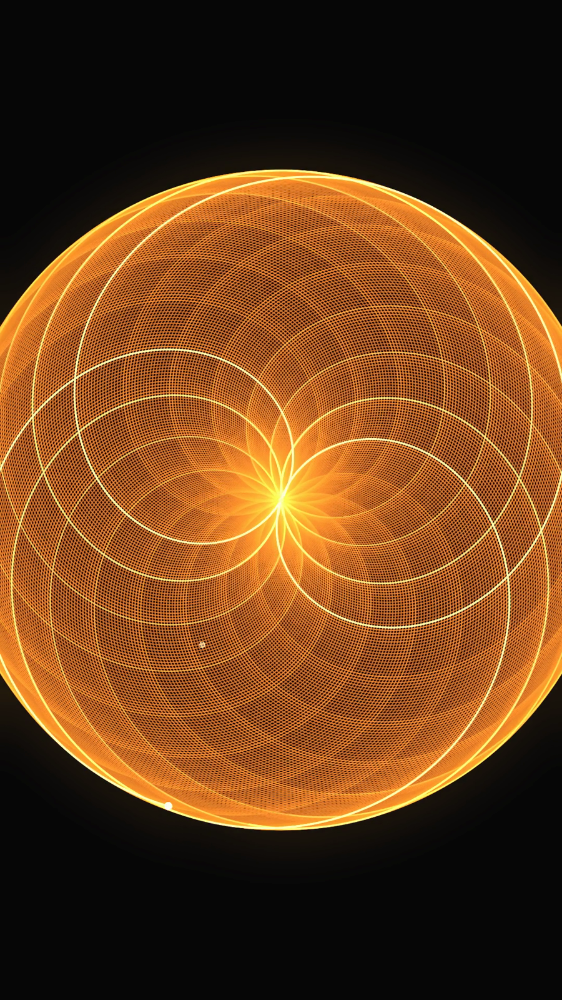

2026 · Motion · Two pieces
Drawing With Maths
Two animations where nothing is illustrated — the equation does the drawing. A chain of rotating circles that resolves into a butterfly, and a rotation by an irrational angle whose petal can never quite close.
Let the mechanism stay visible
The temptation with this kind of piece is to hide the machinery and show only the pretty curve. Both of these do the opposite: the circles that generate the butterfly stay on screen the entire time, at a lower opacity than the trace they produce. The drawing is more impressive when you can see what is drawing it.
- Two visual layers, fixed roles. Dim strokes are mechanism, bright strokes are output. That rule alone makes both pieces readable without a caption.
- Trace persists, mechanism doesn't. The curve accumulates; the circles are always only in their current position. The result is the memory of the frame.
- Near-black background, single hue. Amber on black for the flower, cool violet for the butterfly — one colour each, so the geometry carries everything.
- Slow enough to follow one circle. The rate is set so a viewer can lock onto a single epicycle and watch it work, rather than seeing an undifferentiated swarm.

The idea worth the runtime
The second piece runs almost a minute and a half on a single premise: rotate by an irrational fraction of a turn and the pattern can never repeat. It is a long time to hold on one idea, which only works because the near-misses get visibly smaller while never reaching zero. The animation is the proof.